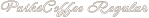
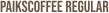
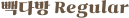

빽다방의 신메뉴 대파크림감자라떼를 소개하는 페이지 제작
흔하지 않은 메뉴인만큼 사용자의 궁금증을 유발할 수 있도록 기획
과감한 색상과 다양한 애니메이션을 이용하여 보는이들에게 재미요소를 부여
웹폰트를 cdn방식으로 연결하고 주 서체 뒤쪽으로 시스템 서체를 폴백으로 연결하여 사용
메인의 첫번째 폰트인 montserrat는 가로길이가 긴 폰트로, 굵기가 굵고 눈에 확 띄는 폰트 사용
메인의 두번째 폰트는 Neonderthaw로 포인트가 될 수 있도록 Montserrat 폰트와 반전되는 얇고 꾸밈이 강한 폰트로 사용
배경으로 사용된 BEBAS NEUE폰트는 세로길이가 긴 폰트로, 과감한 색상과 사이즈로 배경을 채울 수 있도록 사용
기본 한글 폰트는 사용자가 읽기 쉬운 pretendard폰트 사용
포인트 한글 폰트는 가나초콜릿체로, 복고풍의 느낌으로 포인트가 될 수 있도록 함
Montserrat
Neonderthaw
BEBAS NEUE
가나초콜릿체
Pretendard
네이비 바탕위에 흰색을 기본으로하여 다채로운 색상들을 이용하여 제작
채도가 높고 과감한 색상을 사용하여 보는이의 눈에 확 띄어 궁금증을 유발하고 광고의 효과를 주도록 함
#FF5C00
#5AFF4B
#ff4aaa
#192C54
페이지가 로드되면 스크롤시 e.preventDefalut()를 통해 기존 스크롤 동작을 막고 각 section 단위로 스크롤 이벤트를 주었음
마우스 휠 이벤트에서 스크롤 양(delta)을 계산하고 현재 스크롤 위치(scrollTop)를 가져와 마우스 휠 방향에 따라 다음 또는 이전 요소로 스크롤 위치를 변경하는 방식으로 구현
jQuery를 사용하여 부드러운 애니메이션으로 스크롤 위치를 변경하였음
메인의 텍스트를 이미지로 사용하여 페이지가 로드될 때 이미지를 감싸는 div에 클래스명을 부여하여 클래스명이 붙으면 width값이 100%로 늘어나는 방식으로 구현
footer쪽의 텍스트도 이미지로 스크롤이 end 섹션의 윗부분에 올때 이미지를 감싸는 div에 클래스명을 부여하는 함수를 이용하여 구현
처음에는 width값이 변하면서 height값도 이에 맞게 바뀌어서 고민을 했지만 css object-fit과 object-position을 이용하여 내부 이미지가 div의 크기에 맞춰지도록 구현
각 sticker 아이템들을 마우스로 드레그시 마우스를 따라다니고 마우스를 떼었을 때 그 위치에 고정되는 드레그앤드롭 기능을 Js를 통해 구현
마우스 다운시 기본 이벤트 동작을 막았고, getBoundingClientRect() 함수로 요소에 대한 뷰포트의 상대적인 위치정보를 가져왔고, rect.width와 rect.height의 절반을 계산하여 요소의 중심위치를 계산
마우스 이동에 따라 요소를 이동시키도록 moveAt함수를 연결하였고 마우스 업 시 이동 이벤트 리스너를 제거하는 방식으로 구현
각 이벤트마다 마우스 커서 스타일이 grabbing-grab으로 변경되도록 작업
sticker 페이지에서 각 아이템에 mousedown시 아이템 width값, height값의 중간에 마우스의 초점이 가야 하는데 제각각 다른데서 초점이 잡히는 문제
-> js에서 문제점을 찾으려 했는데 문제점을 계속 발견하지 못해 고민하던 중 css에 transform 값을 임의로 주었던 것이 생각나 그 값을 빼보니 중심에 초첨이 잡히게 되어 해결
초기 프로토타입에서 background에 들어가는 font에대한 고민이 많았음
-> 여러 폰트를 나열해 보고 빽빽하고 과감하게 배경을 채울 수 있도록 길고 굵은 디자인의 폰트를 최종 선정
sticker 페이지에 설명이 없었는데 이벤트가 있다는 점을 놓치고 지나갈 수 있다는 피드백을 받음
-> 아이템 중간에 설명을 넣고 애니메이션으로 강조하여 방문자들이 이벤트를 클릭해 볼 수 있도록 해결
한정적인 이미지 소스
-> 빽다방 브랜드 신제품에 대한 소개 페이지이다보니 빽다방 홈페이지에 있는 몇가지의 한정적인 사진밖에 사용할 수 없어 사용할 수 있는 소스가 한정적이어서 여러 이미지들을 외부에서 검색하고 메뉴와 어울릴 수 있도록 편집하여 사용하는 데 시간의 소요가 많았음
브랜드를 선택하여 홈페이지를 디자인하는 세번째 프로젝트. 우연히 들었던 빽다방의 특이한 신메뉴 대파크림감자라떼를 재미있고 조금은 어이없게 소개하는 페이지를 기획하였다.
폰트부터 이미지까지 생각해야 할 것들이 생각보다 많았다. 여러 페이지를 보며 디자인적으로 영감을 얻었지만 기존의 카페 메뉴를 소개하는 페이지와는 조금 다른 특이한 느낌으로 만들고 싶어 고민을 많이했다. 또 한정적인 이미지 소스를 이용할 수 밖에 없었기에 외부 이미지를 찾고 편집하는 작업도 쉽지 않았다.
메뉴의 홍보를 목적으로 하고있는 메뉴를 소개하는 페이지에서 메뉴를 강조하며 적당히 성가신 애니메이션을 구상하는 것도 여러차례의 시행착오를 거쳤다. 여러 애니메이션들을 적용해보며 가장 보기 편하고 기억에 남도록 하였다.
만들면서도 '이게 맞나?' 싶은 생각도 여러번 들었지만 나를 믿으며 작업하였더니 또 하나의 프로젝트가 끝나있었다. 곳곳에 나의 색이 많이 들어간 작업이었던 것 같다. 또 하나의 프로젝트를 하며 해보지 않고 사용해보지 않은 여러 애니메이션과 효과들을 적용해 보며 배운 것이 많았다.
몇 달 전만 해도 이 분야를 잘 몰랐던 내가 하나하나 배워가며 익숙해지고 성장하고 있음을 느낀다.